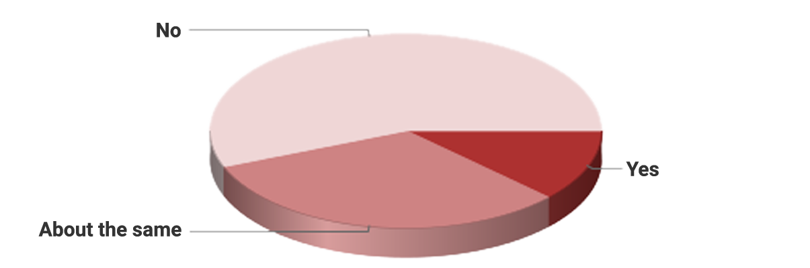
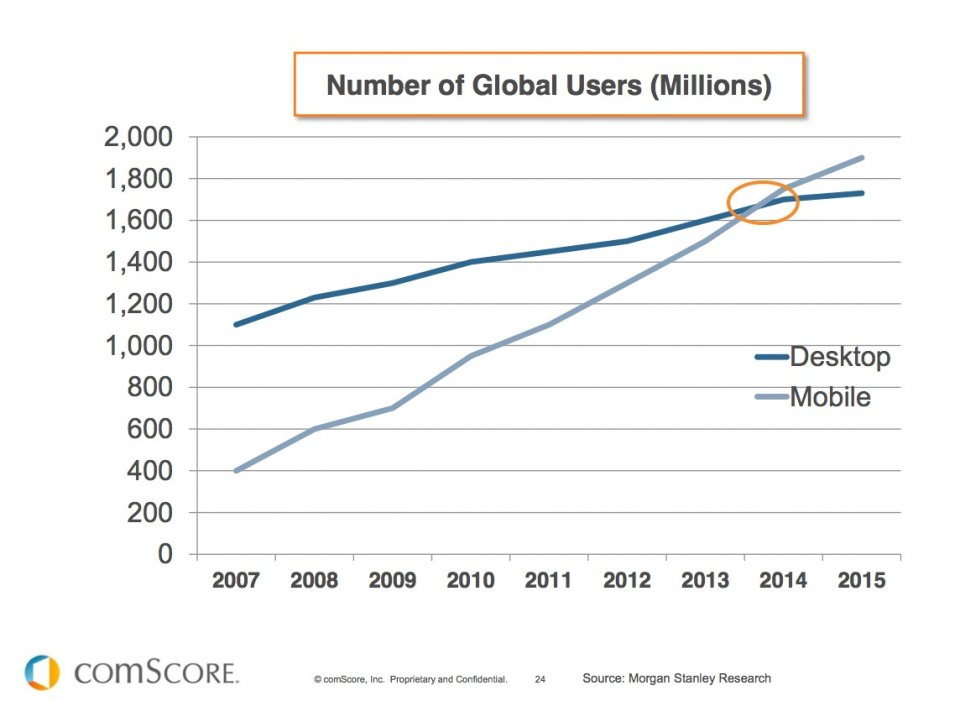
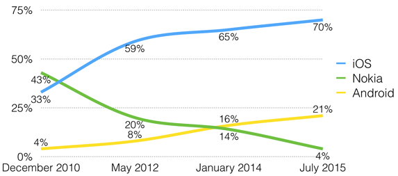
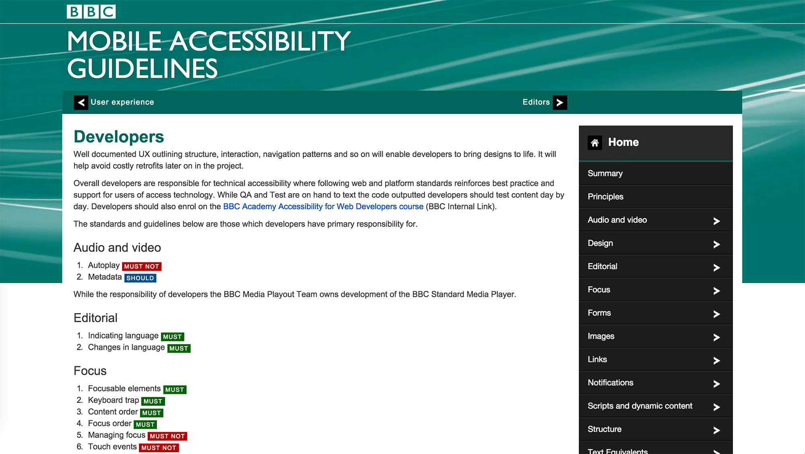
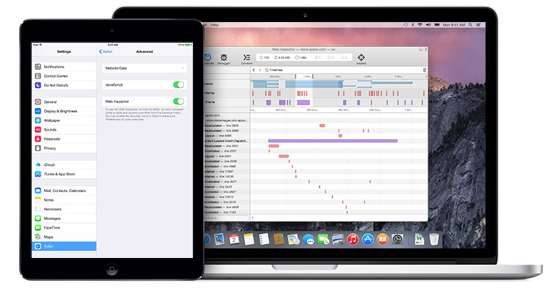
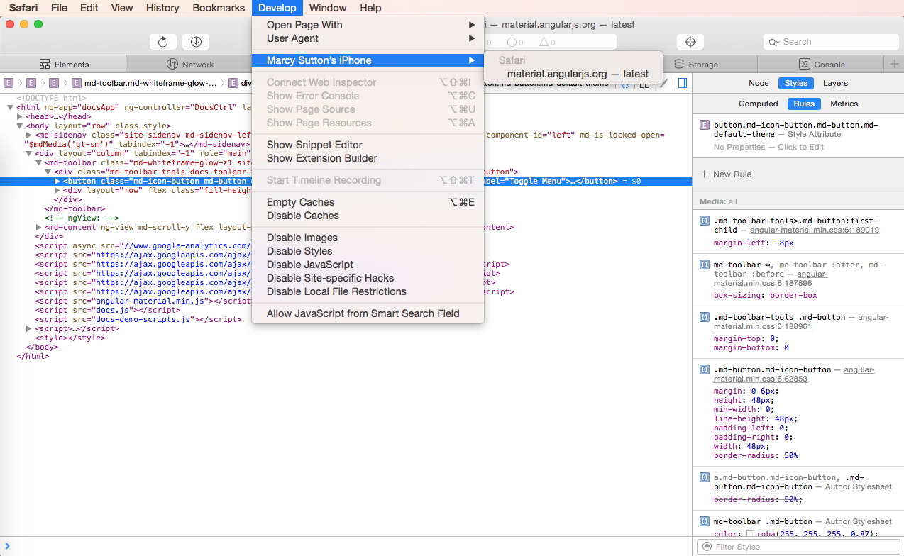
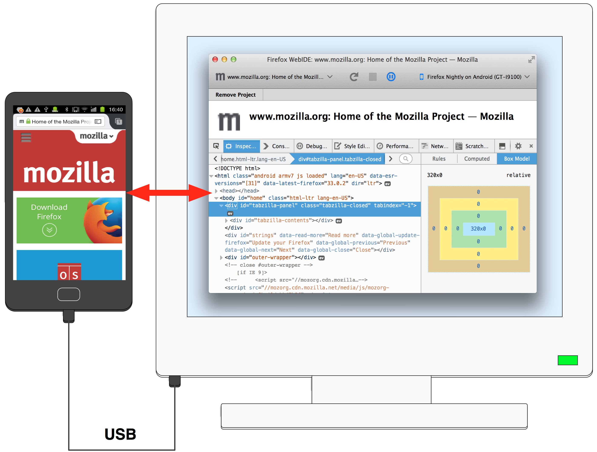
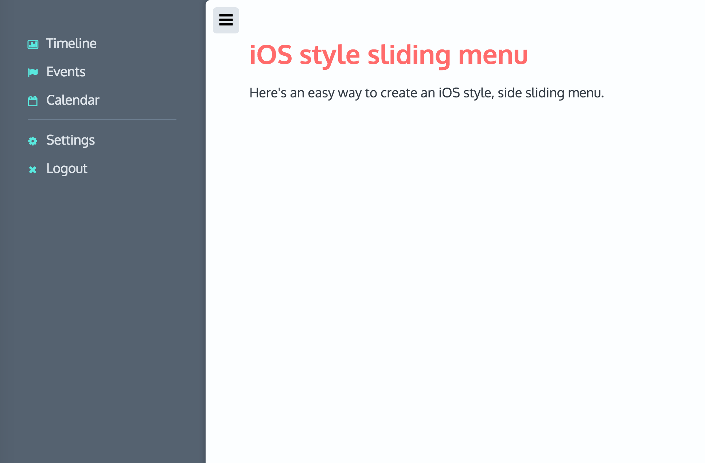
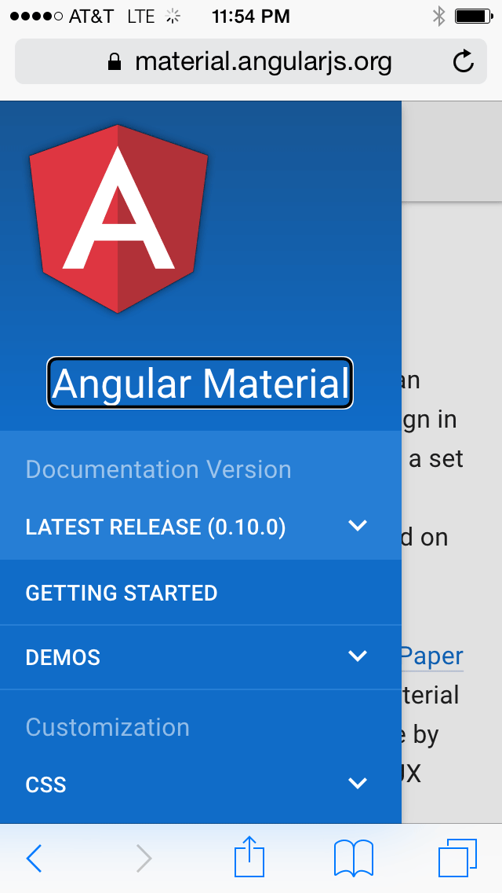
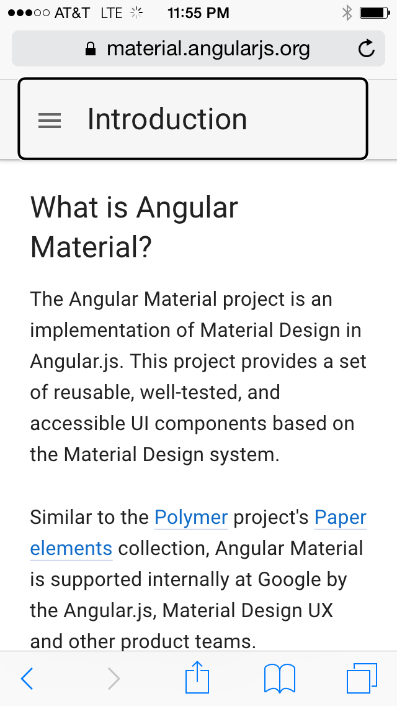

Mobile Accessibility for Developers
Marcy Sutton, Seattle, USA
Accessibility Engineer at Adobe, Angular Core Team Member
Things my phone can do vs. things I need: a Venn diagram
Things my phone can do
- Connect to the Internet
- Play Games
- Take photos
- Go into airplane mode
- Text Message
- Buy things
- Play music
- Hang up on people
- Lag
- Fall apart
- Freeze
- Cost Money
Things I need my phone to do:
- Make phone calls
- Work correctly
Work correctly
Do you use a mobile screen reader more than a desktop screen reader?
| Response | # of Respondents | % of Respondents |
|---|---|---|
| No | 753 | 56% |
| About the same | 432 | 32% |
| Yes | 160 | 12% |
But...mobile
April 28, 2015:
Number of mobile-only internet users now exceeds desktop-only in the U.S.
Source: Comscore
Mobile Platform Usage
Let's talk about…
- Barriers
- Scenarios
- Debugging
- UI Patterns
Barriers
Barriers 1 of 2
- Visual clutter
- Everything's too SMALL
- Locked-down zoom
- Hijacked scrolling
- Ambiguous visual icons
Barriers 2 of 2
- Mounted displays
- One-handed interactions
- Spotty AT support
Fragmentation

Scenarios
Mobile Contexts
- Native
- Hybrid
- Mobile web
iOS Accessibility
Features
- Voiceover
- Siri
- Zoom
- Invert colors
- Switch control
Android Accessibility
Features
- TalkBack
- Switch access
- Braille support
- High contrast
Accessibility is easier to get right in native platforms
But we’re web developers!
What to do?
Focus on making it better.
BBC Mobile Accessibility Guidelines
Mobile browser debugging
iOS Safari with Web Inspector


Firefox WebIDE
Chrome for Android

That's cool but...
We’re in desperate need of better mobile web accessibility testing tools.
What about...
Accessibility Developer Tools in Safari?
Extension plz
What about...
Automating actual mobile browsers?
What about...
Automated testing of screen reader output?
Oh hai, Applescript
What about...
Exposing native test platforms to mobile web*
*Just an idea
UI Patterns
Large hit targets
HTML Source Order

Fancy Layouts and Scrolling
“Page 1 of 1...”
 Scrolling bug in iOS with Voiceover:
Resolved fixed!
Mobile Tab Order Swipe
Dialogs
Key requirements
- Focus management
- Enclose interaction
- Semantics
Angular Material Dialog
HTML5 Dialog
Can I use the HTML5 dialog element?
Only supported in Chrome and Opera
Are we there yet?
- Enclose interaction
- Focus management
- Semantics
Responsive UI Patterns
Resources
All links open in new windows